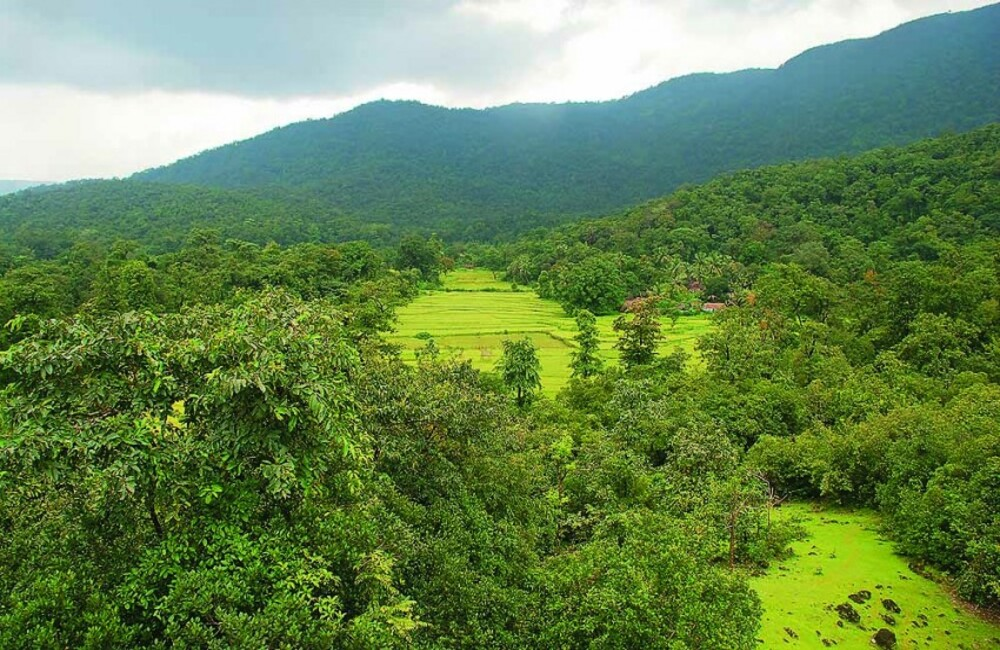

Our Model Description
Aug 1, 2021

Problem Description:
Agriculture field faces significant challenges in protecting crops and farms from bigger pest such
as cows, goats, elephants, nilgais, monkeys, and others which causes extensive damage. Even
few in number, but can destroy whole farm. To address this issue, we are doing project on Farm
Protection from cow using Multimodal Data (Especially Image Processing, CNN) And Sensors
that aims to develop a system that leverages sensors like PIR sensors and Pi cameras to detect the
presence of these animals in agricultural fields. By utilizing machine learning methodologies and
analysis, we will accurately detect the actual presence of cow. When a cow is detected, a buzzer
and light will be triggered to deter the animal from further damaging the agriculture field.
Additionally, a message and image of the animal will be displayed on the web application that
we will create as part of this project, providing farmers with a real-time update on the status of
their crops and any potential threats.
Sensors, Data Used, Methodology:
In this project, we will be using a combination of sensors and data processing techniques to
detect and track animals in real-time. Specifically, we will be using Raspberry Pi, Pi camera,
buzzer, LED light, PIR sensor, wires, USB cable, and other hardware components to create a
system that can monitor animal presence on a farm. The data collected from these sensors will be
processed using image processing algorithms, including OpenCV libraries in Python, to detect
and track the animal movements. We will be using saturation values to extract features from the
images, and then apply Convolutional Neural Networks (CNN) and Artificial Neural Networks
(ANN) for classification.
To train our machine learning models, we will be using a variety of data sources, including
Kaggle, Google Images, etc.
We will develop a web application using Java, HTML, and CSS providing display real-time
updates of the system's monitoring activities, including detected animal movements.
By using convolutional neural networks and artificial neural networks, we aim to achieve high
accuracy in animal classification and minimize false alarms.
Cow Detection in Field
One of the major part of this project is to detect the presence of cow in the agriculture field. When
ever cow enter into the field, Camera and PIR sensor is used to detect and then Buzzer and LED light is
ON which makes the animal run away from the field.
Percentage of field Damaged
When ever the animal runs aways upon the action of Buzzer and LED light on detection. After some minutes
the Pi camera click the picture of the field and then using the CNN and other machine learning algorithm,
calculate the amount of agriculture field damaged.